HƯỚNG DẪN THIẾT LẬP THÔNG SỐ CHƯƠNG TRÌNH
Để thuận tiện cho các công việc khác trong quá trình khai báo, doanh nghiệp cũng cần lưu ý đến một số thiết lập thông số cơ bản của chương trình về việc in tờ khai, chứng từ, làm tròn dữ liệu…
Để kiểm tra và thiết lập, bạn vào menu Hệ thống chọn mục 6. Thiết lập thông số chương trình:
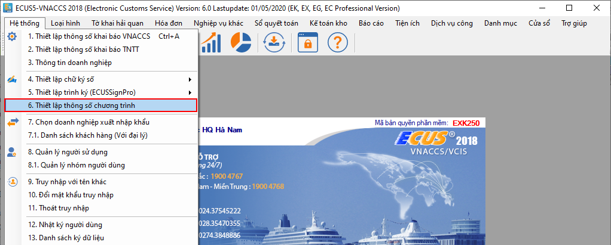
Chức năng thiết lập hiện ra như sau:
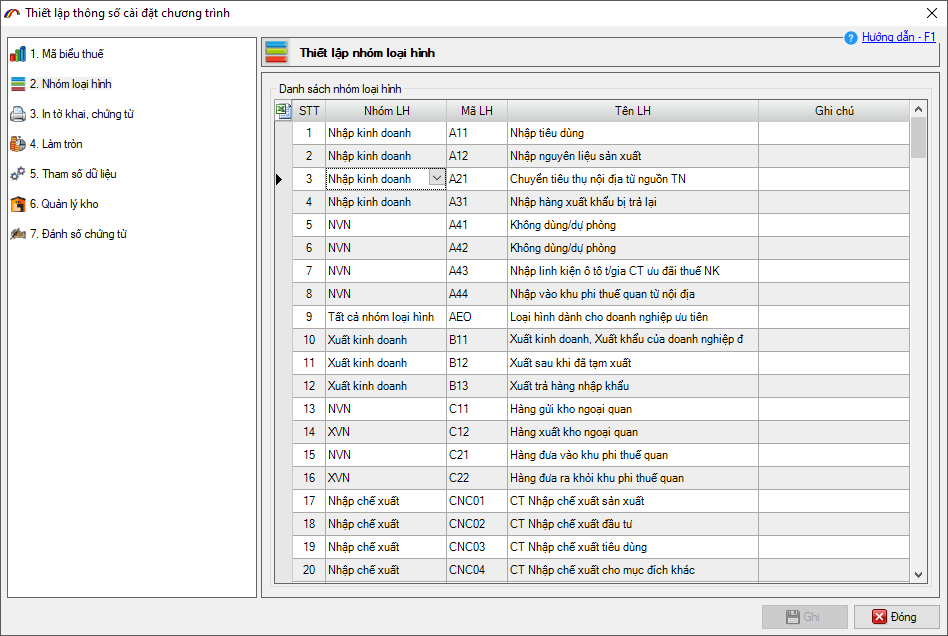
1. Thiết lập nhóm loại hình:
Phần thiết lập nhóm loại hình là mặc định của chương trình, đã được cấu hình chuẩn theo quy định của hệ thống VNACCS, do đó nếu không có trường hợp đặc biệt thì doanh nghiệp không cần phải thay đổi các thiết lập này.
Trường hợp cần thay đổi một mã loại hình sang một nhóm loại hình khác để thuận tiện cho việc mở tờ khai. Ví dụ:
Loại hình A12 – Nhập kinh doanh sản xuất, mặc định được phần mềm phân nhóm là nhóm Nhập kinh doanh, nhưng thực tế doanh nghiệp nhập để sản xuất hàng xuất khẩu và muốn đưa vào nhóm Sản xuất khẩu để thanh lý thanh khoản. Khi đó doanh nghiệp chọn lại nhóm cho loại hình A12 thành Nhập sản xuất:
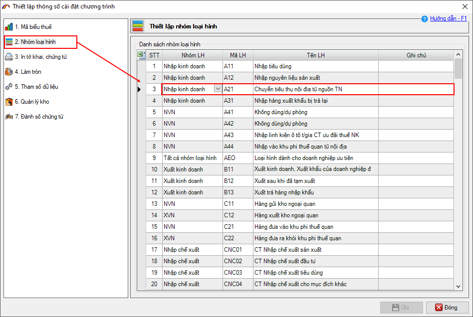
2. Thiết lập thông số in tờ khai, chứng từ.
Chức năng này cho phép người dùng lựa chọn cách thức in tờ khai và các chứng từ ra dạng file excel hoặc dạng báo cáo report, đồng thời có thêm nhiều lựa chọn in tùy biến khác phụ thuộc vào nhu cầu của từng doanh nghiệp.
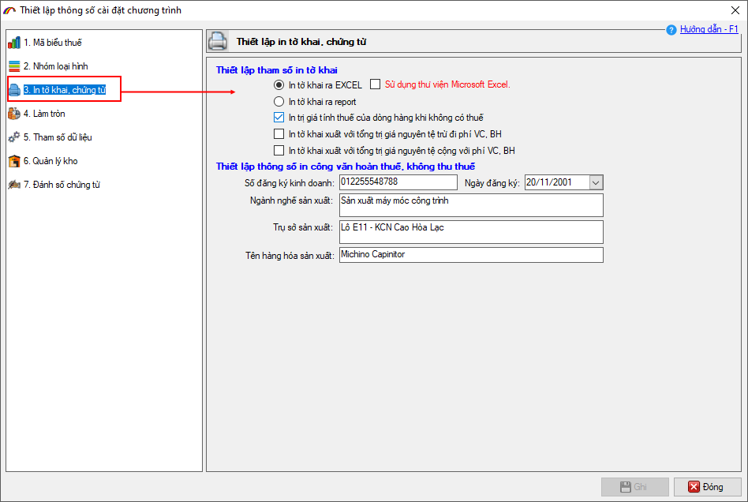
Để in tờ khai, chứng từ ra file excel thì bạn chọn vào mục "In tờ khai ra Excel".
Để in tờ khai, chứng từ ra dạng report để xem và in ra (không phải là file excel) thì bạn đánh dấu chọn vào mục "In tờ khai ra report". Lựa chọn này thường được sử dụng khi máy tính không cài phần mềm Microsoft Excel hoặc doanh nghiệp chỉ muốn view dữ liệu để in ra giấy.
Lưu ý: Có hai cách in tờ khai chứng từ ra file excel tương ứng với hai công nghệ khác nhau.
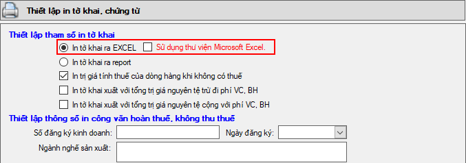
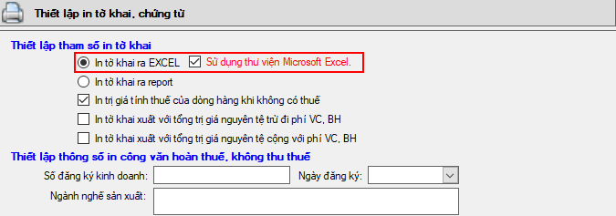
Tại mục Thiết lập thông số in công văn hoàn thuế, không thu thuế giúp bạn thiết lập sẵn các thông tin cần in ra trên công văn hoàn thuế, không thu thuế đối với doanh nghiệp sản xuất xuất khẩu. Nếu các thông tin đã được thiết lập sẵn ở đây, khi doanh nghiệp in công văn hoàn thuế, không thu thuế trong lần thanh lý thanh khoản, phần mềm sẽ tự động đưa các thông tin này vào để bạn không phải nhập lại vào công văn.
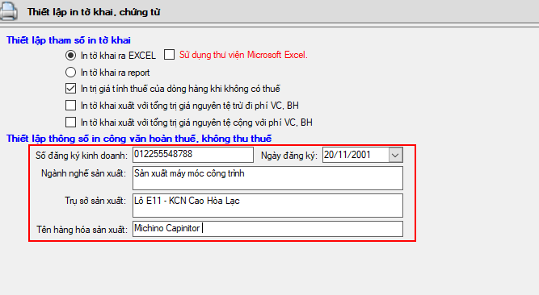
Khi in công văn hoàn thuế, không thu các thông tin sẽ được tự động điền vào như sau:
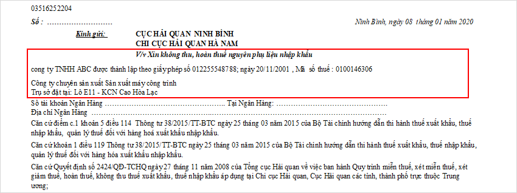
3. Thiết lập thông số làm tròn dữ liệu.
Chức năng thiết lập làm tròn cho phép người dùng đặt quy định sẽ làm tròn bao nhiêu số lẻ thập phân cho các mục: Nguyên phụ liệu, Sản phẩm, Hợp đồng gia công và Định mức sản phẩm. Các thông tin đó bao gồm:
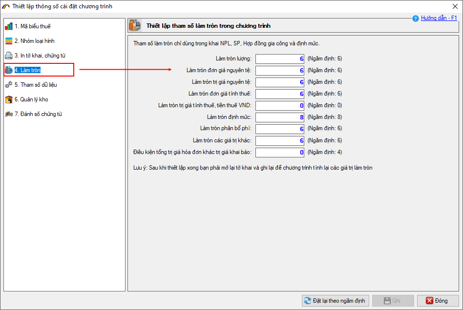
4. Thiết lập tham số dữ liệu.
Chức năng này cho phép doanh nghiệp thiết lập rất nhiều các mục liên quan đến tờ khai hải quan, danh mục, thanh lý, thanh khoản, chứng từ bổ sung… tùy theo nhu cầu riêng của từng doanh nghiệp.
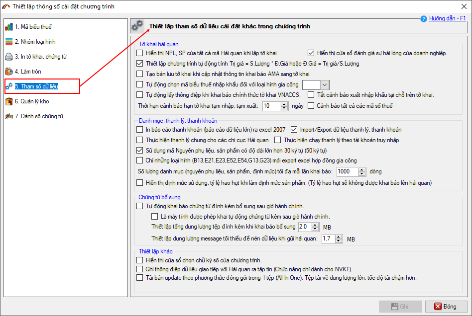
5. Thiết lập thông số quản lý kho.
Chức năng này cho phép doanh nghiệp thiết lập các thông số liên quan đến chức năng quản lý kho (sổ quyết toán và kế toán kho):
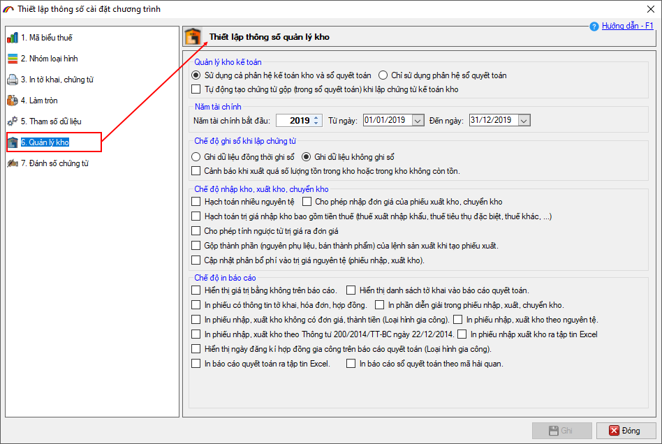
Hiện tại phần mềm ECUS được tính hợp hai module "Sổ quyết toán" và "Kế toán kho":
Các số liệu phục vụ việc khai báo cáo quyết toán với Hải quan sẽ được lấy từ số quyết toán, nhưng số liệu mà Hải quan kiểm tra thực tế tại doanh nghiệp lại là theo số liệu kế toán kho.
6. Thiết lập đánh số chứng từ kho.
Mặc định khi tạo mới phiếu chứng từ , số chứng từ sẽ được sinh tự động ví dụ PN00001, PX00001. Nếu bạn muốn thay đổi số phiếu theo ký hiệu của công ty thì vào mục 7.Đánh số chứng từ trong danh sách để thực hiện:
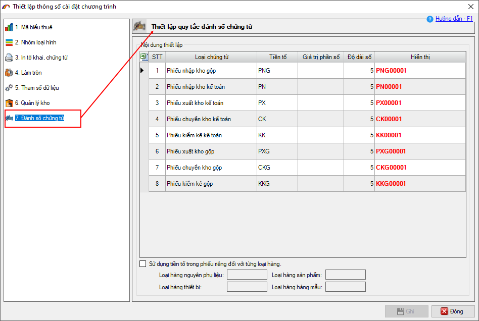
Cột tiền tố: Thiết lập ký hiệu số chứng từ
Cột giá trị phần số: Thiết lập giá trị bắt đầu đánh số cho phiếu, mặc định phần mềm đánh số từ 1.
Cột độ dài số: Thiết lập độ dài số chứng từ phía sau tiền tố, mặc định phần mềm để độ dài số là 5.
Sau khi thiết lập xong bạn nhận nút "Ghi" để lưu thiết lập, bạn lưu ý sau khi đã phát sinh các phiếu chứng từ nhập xuất thì không nên thiết lập lại quy tắc đánh số chứng từ này.